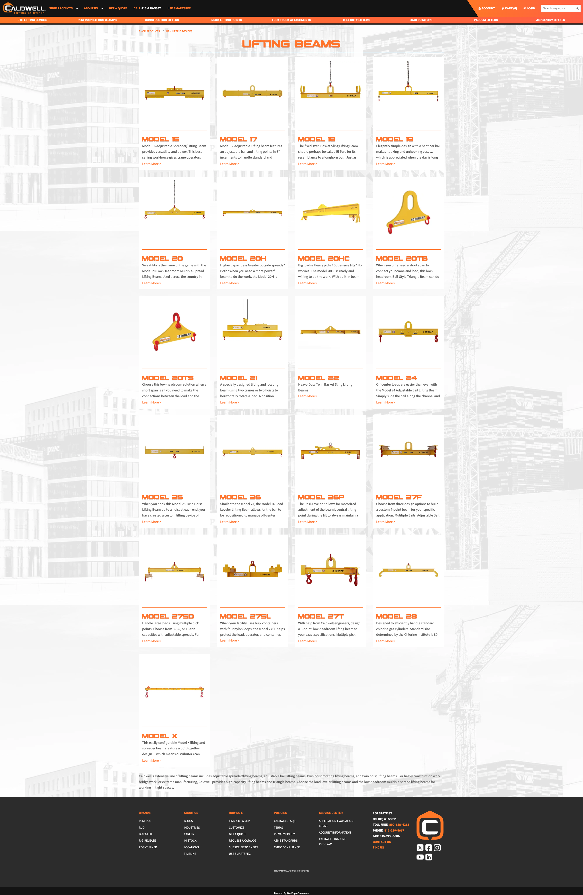
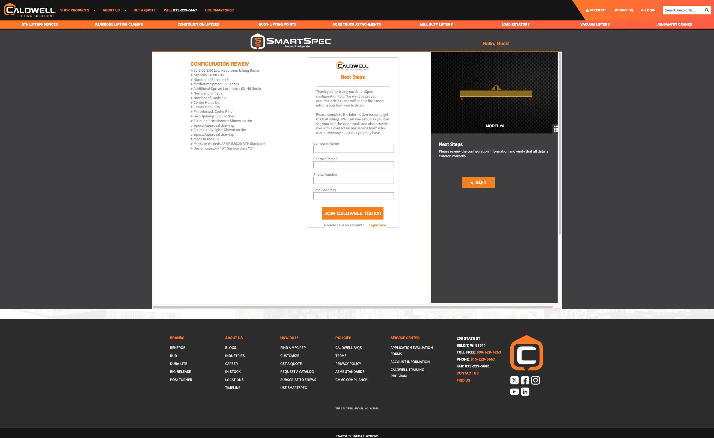

Redesigned product detail and category pages for Caldwell's lifting device catalog — improving clarity, spec findability, and conversion for distributor and end-customer audiences.
The Problem
Goals
Key Design Decisions
Replaced the long unbroken page with collapsed accordion sections: Features, Warnings, Specs, and Support. Users can jump directly to what they need without scrolling past everything else.
This also dramatically improved the mobile experience — dense tables and spec lists collapse cleanly, letting mobile users navigate the same content without the desktop pain.
Introduced named sub-sections — Product Features, Product Warnings, Spec Tables, and Support Downloads — organized around the questions users actually come to the page to answer.
This structure also made maintaining content easier — new information goes in the right place, and the page stays organized without manual cleanup.

The product category pages — listing all models in a product line — were rebuilt as a card grid. Each card surfaces the key spec at a glance, making comparison and selection dramatically faster.
The card layout also scaled well to mobile — stacking cleanly and keeping the most important info visible without horizontal scrolling or table overflow.

Results
Users reported faster access to specs, features, and support content. Accordion structure let them go directly to the section they needed.
Dense desktop tables and spec lists now collapse and stack cleanly on mobile — a significant improvement for field personnel accessing product information on the go.
The new layout pattern scales across all product lines without custom work per product — reducing maintenance burden and improving long-term consistency.